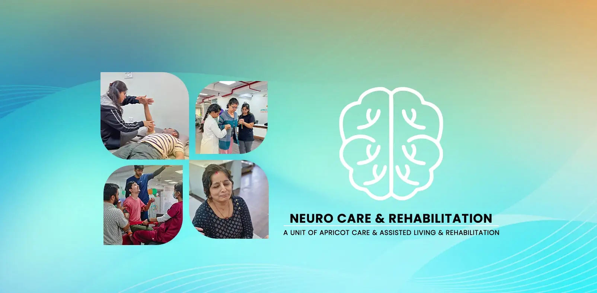

Expert Neurological Rehabilitation & Apricot Care Assisted Living and Rehabilitation in Pune


Expert Neurological Rehabilitation & Neuro Care in Pune
When a neurological condition like a stroke, brain injury, or spinal cord injury changes your life, the path forward can seem daunting and uncertain. These are not simple injuries; they affect the very core of who you are—your movement, your senses, your communication, and your independence. The journey back requires more than just standard therapy; it requires a profound level of specialized expertise, compassion, and hope.
Neurological disorders represent a significant health burden in India, with a recent major study indicating they are now the leading cause of disability-adjusted life years in the country.
At Apricot Care Assisted Living and Rehabilitation in Pune, providing exceptional Neuro Care is the foundation of everything we do. We are not a general physiotherapy center; we are a dedicated center of excellence for neurological rehabilitation. Our mission is to harness the brain and nervous system's incredible capacity for recovery, helping you move beyond your diagnosis to reclaim your life.
Our entire approach is built on a simple but powerful belief: with the right team, the right environment, and a personalized plan, remarkable recovery is possible.
What is Neurological Rehabilitation? The Science of Rebuilding Hope
Neurological rehabilitation is a highly specialized medical program designed for individuals with diseases, trauma, or disorders of the nervous system. Unlike traditional therapy that might focus only on a specific muscle or joint, apricot Care takes a holistic approach, understanding that the root of the challenge lies in the central nervous system—the brain and spinal cord.
The science behind our success is neuroplasticity. This is the brain's amazing, lifelong ability to reorganize itself by forming new neural connections. When one part of the brain is injured, neuroplasticity allows other parts to take over its functions. Our job is to be the catalyst for this process. Every targeted exercise and functional activity we do together sends a powerful signal to your brain, encouraging it to create these new pathways, effectively "rewiring" itself around the damage.
Conditions We Treat with Specialized Apricot Care Assisted Living and Rehabilitation
Our multidisciplinary team in Pune has deep, specialized expertise in treating a wide range of neurological conditions. This page provides an overview of our approach. For more detailed information, please visit our dedicated service pages.
We provide comprehensive stroke rehabilitation to address challenges like paralysis (hemiplegia), spasticity, walking difficulties, and speech problems. Our goal is to maximize functional independence. Learn more on our dedicated Stroke Care Page.
Our program focuses on maximizing mobility and function after paralysis. We provide intensive therapy for strength, transfers, wheelchair skills, and managing the complex health needs associated with SCI. Learn more on our dedicated Spinal Cord Injury Page.
We offer an integrated program that addresses the complex physical, cognitive, and behavioral effects of a TBI, helping survivors and their families navigate the path to recovery. Learn more on our dedicated Brain Injury Recovery Page.
We utilize evidence-based strategies like LSVT BIG® and other specialized exercises to improve balance, walking, and movement amplitude, helping you manage symptoms and maintain independence. Learn more on our dedicated Parkinson's Care Page.
Our therapy focuses on managing symptoms, conserving energy, maintaining mobility and strength, and adapting to the progressive nature of the condition to improve quality of life.
We provide supportive care for adolescents and adults with CP, focusing on managing spasticity, improving functional mobility, and preventing secondary complications.
We also provide expert care for Guillain-Barré Syndrome (GBS), motor neuron disease (MND), peripheral neuropathy, and other disorders of the nervous system.
.webp)
Our Integrated Approach to Neurological Recovery
A successful outcome requires a symphony of therapies working in perfect harmony. Our integrated, multidisciplinary team collaborates on your care every single day.
Neuro-Specific Physiotherapy
This is far more than standard exercise. Our Physiotherapists are trained in advanced neurological techniques (like PNF, Bobath, and NDT) designed to retrain movement patterns.
This therapy helps you:
- Improve walking, balance, and coordination.
- Reduce muscle stiffness (spasticity) and abnormal movement patterns.
- Regain strength and control over affected limbs.
- Build physical endurance for daily activities.

Functional Occupational Therapy
Our occupational Physiotherapists are the crucial link between centeral recovery and real-world independence.
This therapy helps you:
- Relearn and master daily life activities (dressing, cooking, bathing).
- Adapt your home environment for safety and accessibility.
- Address cognitive and perceptual challenges that affect daily tasks.
- Explore returning to work, school, or community roles.
Speech, Swallow & Cognitive Therapy
Neurological conditions often affect our most fundamental human abilities: communication and eating.
This therapy helps you:
- Improve your ability to speak clearly and be understood (aphasia, dysarthria).
- Regain safe swallowing function to enjoy meals and prevent pneumonia (dysphagia).
- Enhance cognitive skills like memory, attention, and problem-solving.
- Rebuild the confidence that comes with effective communication.
Psychological & Emotional Support
A neurological diagnosis affects the entire person, including their emotional well-being and sense of identity. This is a core part of our care.
This therapy helps you:
- Cope with the emotional journey of diagnosis and recovery.
- Manage feelings of depression, anxiety, and frustration.
- Provide crucial support and resources for family members and caregivers.
- Rebuild a positive and hopeful outlook for the future.
Why Apricot Care Assisted Living and Rehabilitation is Pune's Premier Center for Neuro Care
Neuro-Specialist Physiotherapists
Our Physiotherapists are not generalists. They have dedicated their careers to the field of neurological rehabilitation and have advanced training in treating complex neurological conditions.
A Truly Integrated Team
Your physiotherapist, occupational therapist, and speech therapist are not in different buildings; they are part of one cohesive team that discusses your progress and coordinates your care plan daily.
Focus on Functional, Real-World Goals
Our goal is not just to improve a muscle's strength on a machine. It is to help you achieve your goals—whether that's walking to the local shop, holding a cup of tea without spilling, or returning to work.
A Hopeful and Nurturing Environment
We have created a space that is filled with optimism, encouragement, and compassion. We celebrate every small victory with you, because we know they add up to life-changing progress.
Advanced Techniques & Technology
We invest in advanced therapeutic techniques and technologies that can help accelerate recovery and achieve better outcomes.
Frequently Asked Questions (FAQ)
What is the difference between regular physiotherapy and neuro physiotherapy?
Regular orthopedic physiotherapy focuses on muscles, bones, and joints. Apricot physiotherapy focuses on the brain and nervous system itself. The techniques are very different. A neuro physio is an expert in neuroplasticity and uses specialized handling and exercises to retrain the brain's control over the body, addressing issues like abnormal muscle tone, spasticity, and patterned movements.
My doctor said my nerve damage is permanent. How can rehabilitation help?
This is a crucial point. Even if the original damage to the brain or spinal cord is permanent, the potential for recovery is not. Through neuroplasticity, we can train other, healthy parts of your brain and nervous system to take over the lost functions. Rehab doesn't necessarily "cure" the initial injury, but it can dramatically improve your functional ability, independence, and quality of life
How long does Apricot Care Assisted Living and Rehabilitation take?
The journey is unique for every individual. Recovery depends on the nature of the condition, its severity, and the person's goals. While some conditions require ongoing support, patients often see significant gains in the initial months of intensive therapy. We will provide you with a clear, realistic roadmap after your initial assessment.
Is your facility accessible for wheelchair users?
Yes, absolutely. Our entire facility in Pune is designed to be fully accessible and accommodating for individuals with all levels of mobility, including those who use wheelchairs.

Your Road To Recovery
Book An Appointment To Kickstart Your Recovery Journey
Seamless On-site Rehabilitation
Visit our neuro and physiotherapy center in Pune to meet our professionals and start your treatment .
Personalized Online And Home Care Services
Begin with a personalized consultation for online therapies and home healthcare services. Our professionals will help you heal without leaving your house